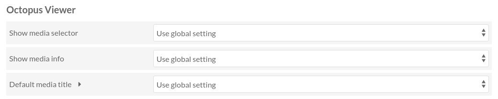

Configuration
Les paramètres se trouvent dans deux endroits différents.
La page de configuration du module contient les paramètres globaux
La page de configuration du site contient les paramètres du site
Paramètres globaux
Les paramètres globaux se trouvent dans la page de configuration du module.
Connectez-vous à l’interface d’administration
Dans le menu de navigation à gauche, cliquez sur le lien « Modules » (sous la section « ADMIN »)
Trouvez Octopus Viewer dans la liste
Cliquez sur le bouton « Configurer » correspondant
Afficher la visionneuse sur la page de contenu
Note
Ce paramètre est principalement destiné à Omeka S 3.2 and sera probablement supprimé à l’avenir.
Pour Omeka S 4.x vous devriez laisser ce paramètre à sa valeur par défaut (« Non ») et utiliser les blocs de page de ressource à la place.
Ce paramètre permet de choisir où la visionneuse sera placée sur la page de contenu.
Valeurs possibles:
- Non
Ne pas afficher la visionneuse. Ça peut être utile si le thème affiche déjà la visionneuse.
- Avant le contenu
Affiche la visionneuse avant (au-dessus) du contenu
- Après le contenu
Affiche la visionneuse après (dessous) le contenu
Modèle d’URI IIIF Image
Afficher le sélecteur de médias
Ce paramètre contrôle si le sélecteur de médias (le panneau de gauche) est affiché ou non. Ce paramètre global peut être surchargé dans les paramètres du site.
Valeurs possibles:
- Seulement s’il y a plusieurs médias
Le sélecteur de média sera affiché seulement s’il y a plus d’un média à afficher. C’est la valeur par défaut.
- Toujours
Toujours afficher le sélecteur de média, même s’il n’y a qu’un seul média.
- Jamais
Ne jamais afficher le sélecteur de média.
Afficher les infos du média
Ce paramètre contrôle si les infos du média (le panneau de droite) est affiché ou non. Ce paramètre global peut être surchargé dans les paramètres du site.
Valeurs possibles:
- Toujours
Toujours afficher les infos du média.
- Jamais
Ne jamais afficher les infos du média.
Titre du média par défaut
Ce paramètre contrôle ce qui est affiché dans le sélecteur du média, à côté de la vignette du média, si le média n’a pas de titre. Ce paramètre global peut être surchargé dans les paramètres du site.
Valeurs possibles:
- [Sans titre]
Affiche le texte « [Sans titre] ». C’est le comportement par défaut.
- Aucun texte
N’affiche aucun texte. Seule la vignette sera visible.
Paramètres de site
Les paramètres de site se trouvent dans la page des paramètres de site.
Dans cette page il y a une section nommée « Octopus Viewer ».
Afficher le sélecteur de médias
Ce paramètre contrôle si le sélecteur de média (le panneau de gauche) est affiché ou non. Ce paramètre surcharge le paramètre global.
Valeurs possibles:
- Utiliser le paramètre global
Utiliser la valeur définie dans les paramètres globaux. C’est la valeur par défaut.
- Seulement s’il y a plusieurs médias
Le sélecteur de média sera affiché seulement s’il y a plus d’un média à afficher.
- Toujours
Toujours afficher le sélecteur de média, même s’il n’y a qu’un seul média.
- Jamais
Ne jamais afficher le sélecteur de média.
Afficher les infos du média
Ce paramètre contrôle si les infos du média (le panneau de droite) est affiché ou non. Ce paramètre surcharge le paramètre global.
Valeurs possibles:
- Utiliser le paramètre global
Utiliser la valeur définie dans les paramètres globaux. C’est la valeur par défaut.
- Toujours
Toujours afficher les infos du média.
- Jamais
Ne jamais afficher les infos du média.
Titre du média par défaut
Ce paramètre contrôle ce qui est affiché dans le sélecteur de médias, à côté de la vignette du média, si le média n’a pas de titre. Ce paramètre surcharge le paramètre global.
Valeurs possibles:
- Utiliser le paramètre global
Utiliser la valeur définie dans les paramètres globaux. C’est la valeur par défaut.
- [Sans titre]
Afficher le texte « [Sans titre] ».
- Aucun texte
N’affiche aucun texte. Seule la vignette sera visible.